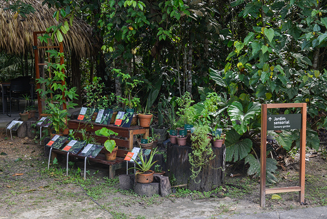

<div class="home">
  <div class="box">
    <!-- <div>
      <input
        type="search"
        class="form-control mb-3 form-control-sm"
        placeholder="Pesquisar por Pontos"
      />
    </div> -->
    <div class="map">
      
    </div>
    <div class="infos">
      <div class="me-3">
        <button class="btn btn-outline-secondary">Jardim Sensorial</button>
        <br />
        <button class="btn btn-outline-secondary">Palmeiras</button> <br />
        <button class="btn btn-outline-secondary">Orquídias e Bromélias</button>
        <br />
        <button class="btn btn-outline-secondary">Borboletas</button>
      </div>
      <div class="side">
        <div class="me-2">
          
          <div class="text-center">
            <audio controls>
                <source src="horse.ogg" type="audio/ogg" />
                <source src="horse.mp3" type="audio/mpeg" />
                Your browser does not support the audio element.
              </audio>
          </div>
        </div>
        <p>
          Sabemos, com surpresa, que boa parte do código genético da banana
          (50%) é semelhante ao dos humanos! O que mais temos em comum com as
          plantas? Características que poderiam explicar a sua capacidade de nos
          alimentar, oferecer terapias, intoxicar, anestesiar, acalmar ou
          excitar. <br />
          Aos humanos, aos insetos e a outros seres vivos. O que as plantas
          armazenam de tão valioso? Algumas se revelam ácidas ou picantes ao
          paladar, outras exalam perfumes que nos fascinam e se vestem de cores
          deslumbrantes. <br />
          Os registros do jardim obedecem aos protocolos da botânica, mas é
          objeto de pesquisa no Musa saber como as classificam os saberes das
          culturas tradicionais, sempre atentas às percepções concretas.
        </p>
      </div>
    </div>
  </div>
</div>
